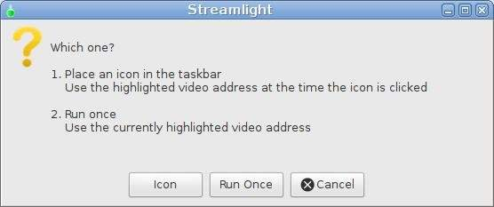
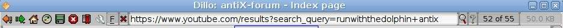
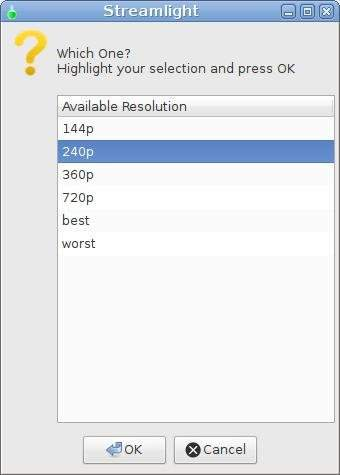
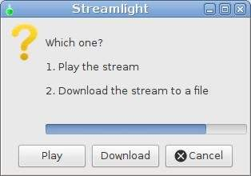
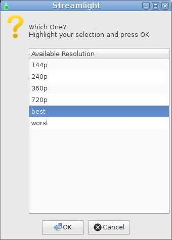
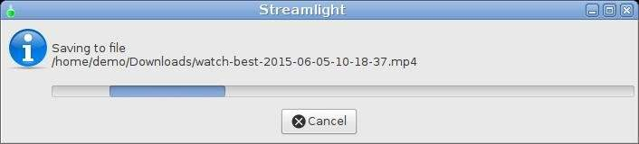

Conventions
What is Streamlight
Its main purpose is to provide you with an easy way to play or download antiX help videos from Youtube. It can do this without using a modern, heavyweight, web browser that might place high demands on your system which is sometimes seen as degraded performance.
Streamlight can be used in partnership with almost any web browser, even those that cannot natively handle videos. It is also possible to use it without any web browser. It will work with any application in which your cursor can highlight the address of a video. For example a word processed document, a PDF file, a plain text email, or a terminal command line.
Because it is so economical in its use of your system resources, Streamlight is equally well suited to both modern powerful kit, and older less capable kit.
Videos can be handled from a range of other popular, anonymous video streaming services, in addition to Youtube. These should be regarded as a bonus rather than a mainstream goal of Streamlight. The focus is on delivering antiX help videos from Youtube to hardware of greatly differing capabilities. Features and facilities beyond this objective are deemed to be outside the scope of the project.
Typical Use Case
The user prefers to work by clicking buttons rather than by typing commands. Their interest is in using their system rather than understanding its technicalities. Beyond the applications they normally use day-to-day, they have low levels of confidence in their technical abilities. Applications that are simple to use and easy to understand are high priorities.
Scenario 1 Play a Live Stream on Old Kit
-
The hardware specification and capability of your system is modest by modern standards but it runs antiX OK
-
Using a fully featured, heavyweight web browser noticably limits the ability of your system to run other apps concurrently
-
Streaming a live video in your heavyweight web browser overloads your system and produces degraded performance
-
You want to browse Youtube using a lightweight browser which is better suited to your system
-
You want to select a Youtube video and play its live stream
-
You want to choose the on screen size (resolution) of the video in order to manage the CPU demand on the system
Scenario 2 Download a Stream on Modern Kit
-
You have an email containing the address of a Youtube video you want to download and save as a file
-
You do not want to install a web browser plugin to do the download and prefer to not use an online conversion service
-
You want to choose the highest resolution in which the video is available in order to get the best picture quality
Getting Started
Streamlight may be started in three ways:
-
Manually from the main menu in Icon mode (Illustrated in scenario 1)
-
Manually from the main menu in Run Once mode (Illustrated in scenario 2)
-
Automatically launch Icon mode at startup
Automatically Launch Icon Mode at Startup
To automatically start icon mode, place an item in the session startup file.
|
|
The session startup file is in a hidden folder in your home folder .desktop-session/startup |
| A simple way to add an item to run at session startup 1. antiX Control Center→Session Tab→User Desktop Session 2. When the editor opens→Startup Tab 3. Type in your item 4. Save the file and close the editor |
|
Example entry to automatically place an icon in taskbar at startup |
Play the Live Stream in Scenario 1
From the antiX menu select
Streamlight
A window opens asking which mode is wanted.

Press the Icon button to place an icon in the taskbar
In this scenario the lightweight web browser, Dillo is used to browse Youtube videos. This is for the sake of illustration only, other web browsers may also be used.
From the antiX menu select
Dillo
Clear the address area and copy and paste the following address, then press the enter key
https://www.youtube.com/results?search_query=runwiththedolphin+antix

The address is provided here for your convenience and to simplify demonstrating the scenario.
It displays a list of antiX help videos to save you the task of searching for them.
| To copy, highlight the address with your cursor To Paste, click the middle button of your mouse or simutaneously press left and right buttons |
Right click on a video image or link address
In the cascading menu choose Link Menu→Copy Link Location
| Alternatively, you can click on a link and follow it until the address of the video is shown in the address bar then highlight the address with the cursor. |
Left click on the Streamlight icon in the taskbar to pass on the address
A window opens showing all the resolutions (on screen video sizes) in which the video is available.

Select one and press the OK button.
| best and worst are aliases for the highest and lowest available resolutions. They produce either the largest or smallest on screen video size. The smaller the size, the lower is the demand on your system when playing the video. |
A window opens asking whether to play or download the stream.

If a buton is not pressed, Play is automatically started after a timeout
Download the Stream in Scenario 2
Use the cursor to highlight the following video address
https://www.youtube.com/watch?v=IZxV6I1wjns
The address is provided here for your convenience and to simplify demonstrating the scenario.
It simulates obtaining it from an email or other application. The video it points to is quite brief and downloads as a small file.
From the antiX menu select
Streamlight
A window opens asking which mode is wanted.
Press the Run Once button
This will use the video address you have currently highlighted and quit when it has finished.
A window opens showing all the resolutions (on screen video sizes) in which the video is available.

Select best and press the OK button.
| best and worst are aliases for the highest and lowest available resolutions. They produce either the largest or smallest on screen video size. The larger the size, the greater is the demand on your system when playing the video. |
A window opens asking whether to play or download the stream.
Press the Download button.
| If a button is not pressed before the timeout ends the stream defaults to Play. |
A window stays open while the stream is downloading.

All downloads are saved as a file in your Downloads folder.
| The file is named in a standard way. The first word is watch followed by: the resolution you selected, the date the time .mp4 |
Summary of Files
Log File
-
Log file is located in /home/USERNAME/.streamlight.log
Executable files are located in /usr/local/bin/
-
streamlight-gui-launcher.sh is the launcher script
-
streamlight.sh is the script that does all the work
Menu file is located in /usr/share/applications/antix/
-
streamlight-gui-launcher.desktop
Icon files are located in /usr/share/pixmaps/
-
cross_red.png
-
info_blue.png
-
questionmark_yellow.png
-
streamlight-gui-launcher.png
References
Video
antiX 15 - Streamlight - Stream Video on Low Powered Hardware by runwiththedolphin https://www.youtube.com/watch?v=2M5B5aXBDwk